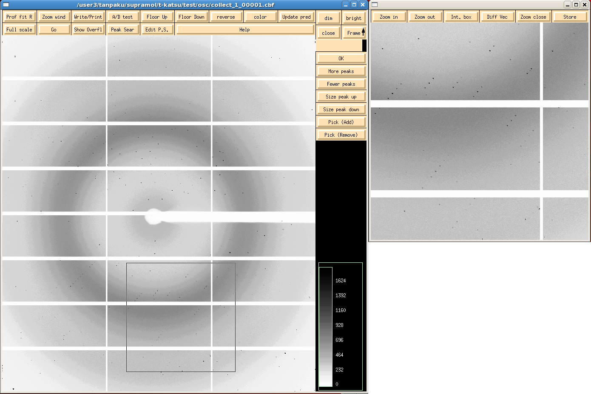
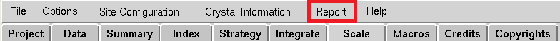

Home > おうちでできる構造解析 > 番外編〜HKL2000〜
-おうちでできる構造解析 番外編-概要 → HKL2000 → scalepack2mtz → 空間群の決定 → ログを読む
-contents-
起動〜ビームラインの選択
ファイルの読み込み
Index
Integrate
Scale
空間群の決定
統計値の出力
起動〜ビームラインの選択
- 起動 （HKL2000がインストールされているlinuxマシンで）コマンドラインに "HKL2000" と入力してEnterで起動
- ビームライン（検出器）の選択 ビームライン（検出器）を選んで[OK]をクリック
ファイルの読み込み
- 回折イメージの選択 左のツリーから回折イメージが入ってるディレクトリを選択して、"Raw Data Dir"の横の[>>]をクリック
- 出力ディレクトリの作成 [Create Directory]をクリックして、結果を出力するディレクトリを作成します。 （例ではhklというディレクトリを作成しました。）
- 出力ディレクトリの選択 左のツリーから作成したディレクトリを選択して、"Output Data Dir"の横の[>>]をクリック
- 回折イメージの読み込み [Load Data Sets]をクリックすると、新しくウィンドウが立ち上がるので[Ok]をクリックして、イメージを読み込みます。
Index
"Index" タブを選択- ビームポジションの変更
- 回折イメージの表示 [Display] をクリックすると、XDISPが立ち上がり回折イメージが表示されます。
- ピークサーチ [Peak Search]をクリックすると、自動的に回折点が拾われます。
- 空間群（ブラベ格子）、格子定数の決定 [Index]をクリックすると、新しいウィンドウが起動します。
- Refine [Refine]をクリック
放射光施設で収集したデータを持ち帰って解析するとき、ビームポジションがずれてうまくいかないことがあります。 ビームポジションはDENZOのログに残るのでこれを参考に値を入力します。もちろん、放射光施設で一度データ処理をしておく必要があります。
結果の出力ディレクトリ（Output Data Dir）のdenzo.logを見ます。[Set Beam Position]をクリックして、ログで確かめたビームポジションに変更して、[Update set]をクリックします。
回折点の拾いかたは、XDISPの[Peak Search]をクリックしたあとに表示される[More peaks],[Fewer peaks],[Size peak up],[Size peak down]...で変更できます。とりあえずは何もいじらずに次に進んでみてください。
ズームはXDISPの[Zoom wind]で行います。ズームの位置はセンタークリックで変更することができます。
ピークサーチの結果をもとに可能性の高い（penaltyの小さい）ブラベ格子から、緑→黄→赤の順に色分けされます。 緑色で一番上にあるものを選び、[Apply & Close] をクリックします。

XDISPの[Update Predictions]をクリックすることで、予測される回折点の表示と非表示を切り替えることができるので、 実際の回折点と一致しているか確認します。

合っていればRefineへ進みます。合っていなければ他のブラベ格子を選択。
↓
[Fit All]をクリックして、"Mosaicity" のチェックを外して、[Refine]をクリック
↓
"Mosaicity" にチェックを入れて、[Refine]をクリック
χ2,Y-χ2,X-χ2が緑色になっていればOKです。黄色や赤の場合はIndexからやり直します。 （χ2は回折点の予想位置と実際の位置のずれを表します。小さいほどよいです。上手く処理できていれば1よりも小さくなります。）
黄色や赤の場合は[Abort refinement] をクリックしてやり直します。
→他の空間群を選択する。
→ピークの拾いかたを変える。
→高分解能側を切って（左上の"resolution range" の "Max" に数値を入れる）
Integrate
"Integrate" タブを選択- 実行 [Integrate]ボタンをクリック
- 結果の確認 処理と同時に右下にχ2,Cell,Mosaicityなどが表示されるので、大きな値になっていないことを確認します。
赤字でIntegration Completeと表示されれば積分完了です。
Scale
"Scale" タブを選択- Scaling [Scale sets]をクリックしてスケーリングを行います。終わるとDoneと表示されます。
- Exclude Frames [Exclude Frames]をクリックするとχ2とフレームのグラフが表示されるので、χ2の大きなものをクリックして除きます。 よくわからない場合は[Auto Select]をクリックしてください。明らかに大きいものが自動的に選択されます。
- 分解能の決定
- Error Scale Factor [Show log File]と[Error Scale Factor]をクリックして、ログの一番後ろとErrorsを見比べます。Norm Chi**2とErrorsが対応しているので、Errorを調整してNorm Chi**2が0.9-1.1の間に収まるようにします。Norm Chi**2を小さくしたいときはErrorsの値を大きく、Norm Chi**2を大きくしたいときはErrorsの値を小さくして、[Done]をクリックします。その後、[Scale sets]をクリックして、再びログを確認します。
- ファイル名 最後になりましたが、.scaファイルとログの名前を変更して、[Scale sets]をクリックします。（先に変更しておいたほうがいいかもしれません。）.scaファイルとログは対応した名前（同じ名前）にしておくと後々便利です。
※以下、2回目以降の[Scale sets]は"Use Rejections On Next Run" にチェックを入れた状態で行います。
[Close]で閉じた後、[Scale sets]をクリックします。
分解能の目安はRmergeやI/sigmaなど議論の分かれるところですが、ここではI/sigmaを指標とします。 I/sigmaのグラフのliner scaleをクリックして、I/sigma > 2の位置で最高分解能を決定します。
I/Sigma vs. Resolutionというグラフがあるので、左下の水色のボタンを押して対数軸から線形軸に切り替えます。下の方に見えるグレーの横線がI/sigma = 2の値なのでこれを目安にします。（左ドラッグで拡大、右クリックで拡大解除）"Resolution Max" と "Resolution Max" に分解能を入力して、[Scale sets]をクリックします。
outer shell(Highest resolution shell)のI/sigmaを確認します。 [Show log]でログを表示して、一番下のAverage IをAverage errorで割った値がouter shellのI/sigmaとなります。
17.2/4.7 = 3.7なのでouter shellのI/sigmaは3.7となります。まだ高分解能側のデータも使えそうです。
後はErrorの修正→[Scale sets]を繰り返してNorm Chi**2が0.9-1.1に収まれば完了です。
Norm Chi**2が小さすぎるときは・・・
"Error scale factor"の値を小さくして、Norm Chi**2全体を大きくします。
↓

空間群の決定
- 空間群の決定 空間群の決定で空間群を決定します。
- .xファイルの読み込み
- Scale 空間群の変更 "Scale"タブを選択
- Scale Scaleに戻って、Scaleをやり直したら完了です。
空間群がわかったら、Integrateの際に生成されるファイル（.xファイル）を読み込んで、空間群を変更してscaleのみやり直します。 （HKL2000を終了していなければそのまま空間群を変更するだけで大丈夫です。）
"Scale Sets Only"にチェックをいれて、左のツリーから.xファイルの入っているディレクトリ（ファイルの読み込みの出力ディレクトリ）を選択して、"New Output Data Dir Data Dir"の横の[>>]をクリックします。[Load Data Sets]をクリックすると、新しくウィンドウが立ち上がるので[Ok]をクリックして、.xファイルを読み込みます。
1."Space Group"を変更
2."Small Slippage Imperfect Goniostat"にチェックを入れる
3."Output File"と"Log File"の名前を変更
[Scale Set]をクリックすると空間群が変更されます。
統計値の出力
最後に[Report]をクリックして統計値を出力しておくと便利です。
ウィンドウが立ち上がるので、[OK]を押すとhtml形式でログが見やすく出力されます。

PyMOL
- インストール
- 基本操作
- コマンドの基本
- 作図に役立つコマンド+α
- 静電ポテンシャルの表示
- 疎水性度の表示
- 保存度による色分け
- 3DCGプリント
- ラベル
- 分子の重ね合わせ
- 水素結合
- 距離の測り方
- カメラ方位
- リガンド結合部位の表示
- 電子密度マップ mesh
- 電子密度マップ volume
- 電子密度マップ FFT
- ボール&スティックモデル
- cavityの表示
- pocketの表示
- 相互作用部位の表示
- 動画の作り方 GUI編
- 動画の作り方 コマンド編
- 二次構造の割り当て（DSSP）
- 透明
- 温度因子
- 点変異の導入
CCP4mg
3Dプリンター
おうちでできる構造解析
- 概要
- インストール & 準備
- iMosflm
- SCALA
- Matthews係数
- 分子置換モデル
- HKL2000 概要
- HKL2000
- HKL2000 scalepack2mtz
- 空間群の決定
- HKL2000 ログを読む
その他
- 保存度による色分け
(chimera編) - Excelでまとめる
アライメント - PowerPoint
オリジナルテンプレート - アニメーションGIFの
作り方 giam編 - アニメーションGIFの
作り方 ImageMagick編 - 初めてのPDB登録